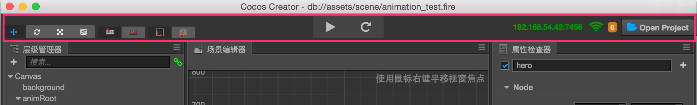
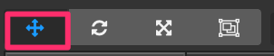
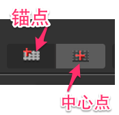
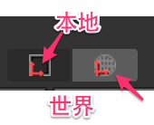
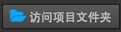

工具栏

工具栏 位于编辑器主窗口的正上方，包含了五组控制按钮或信息，用来为特定面板提供编辑功能或方便我们实施工作流。
选择变换工具

为 场景编辑器 提供编辑节点变换属性（位置、旋转、缩放、尺寸）的功能，详情请阅读使用变换工具布置节点
变换工具显示模式
使用以下两组按钮控制 场景编辑器 中 变换工具 的显示模式。

位置模式：
- 锚点：变换工具将显示在节点 锚点（Anchor） 所在位置。
- 中心点：变换工具将显示在节点中心点所在位置（受约束框大小影响）。

旋转模式：
- 本地：变换工具的旋转（手柄方向）将和节点的 旋转（Rotation） 属性保持一致。
- 世界：变换工具的旋转保持不变，x 轴手柄和 y 轴手柄和世界坐标系方向保持一致。
运行预览游戏
包括两个按钮：
- 运行预览：点击后在浏览器中运行当前编辑的场景。
- 刷新设备：在所有正在连接本机预览游戏的设备上重新加载当前场景（包括本机浏览器和其他链接本机的移动端设备）。
预览地址

这里显示运行 Cocos Creator 的桌面电脑的局域网地址，连接同一局域网的移动设备可以访问这个地址来预览和调试游戏。
打开项目文件夹

在操作系统的文件管理器（Explorer 或 Finder）打开项目所在的文件夹。
继续前往 编辑器布局 说明文档。